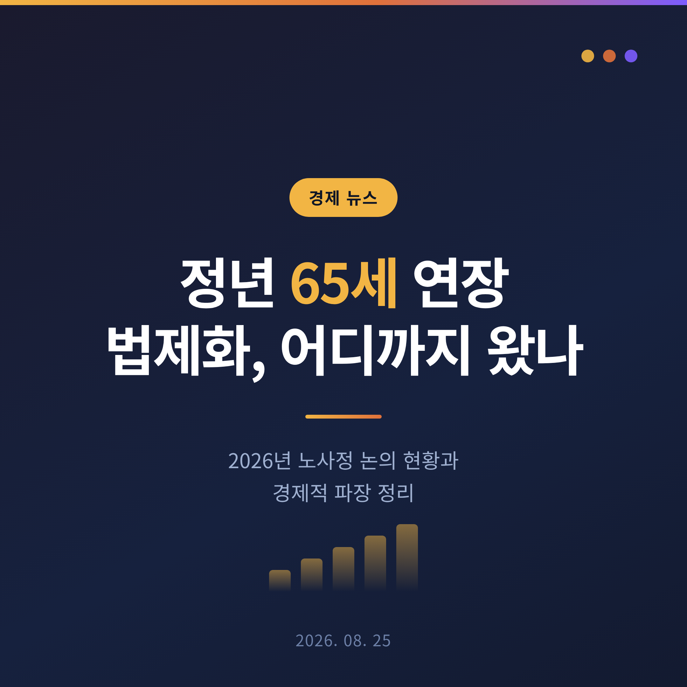
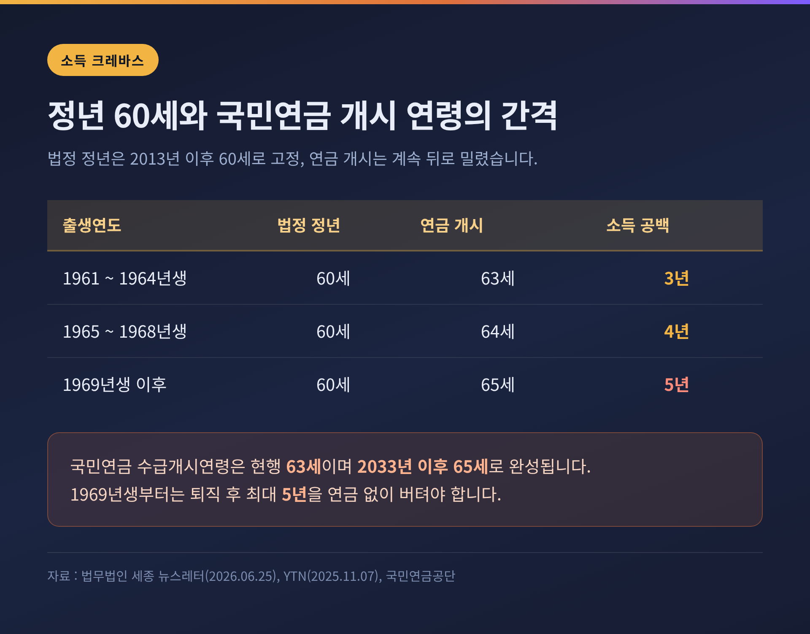
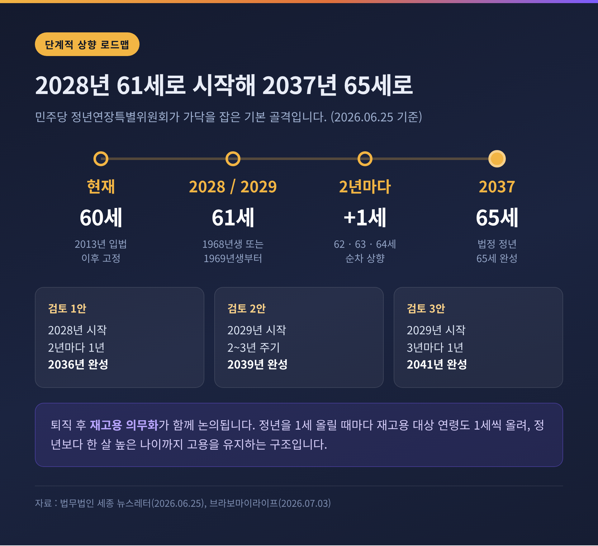
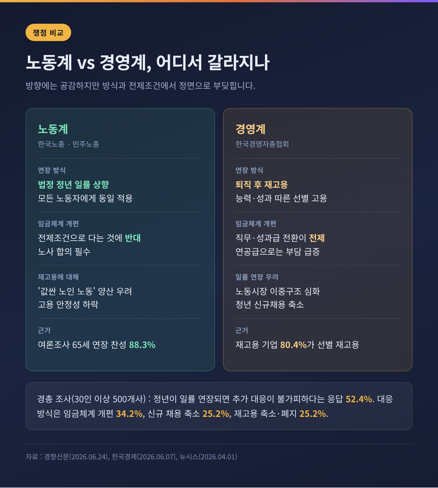
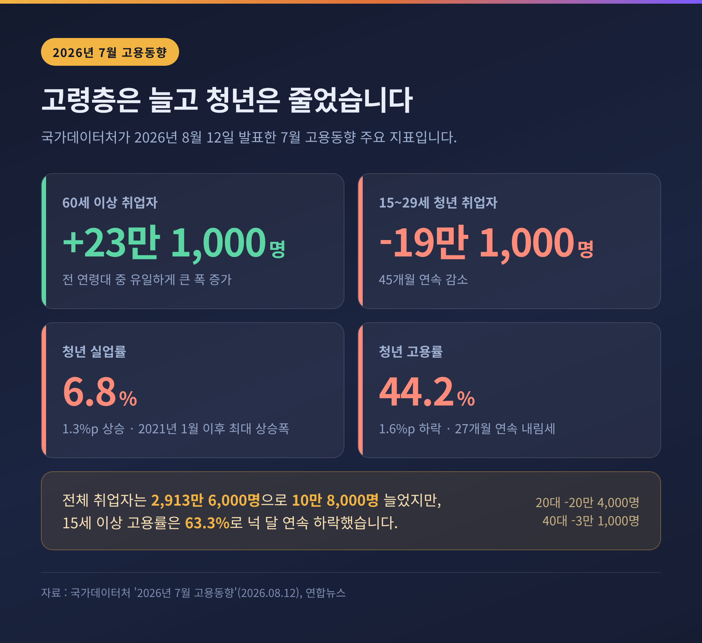
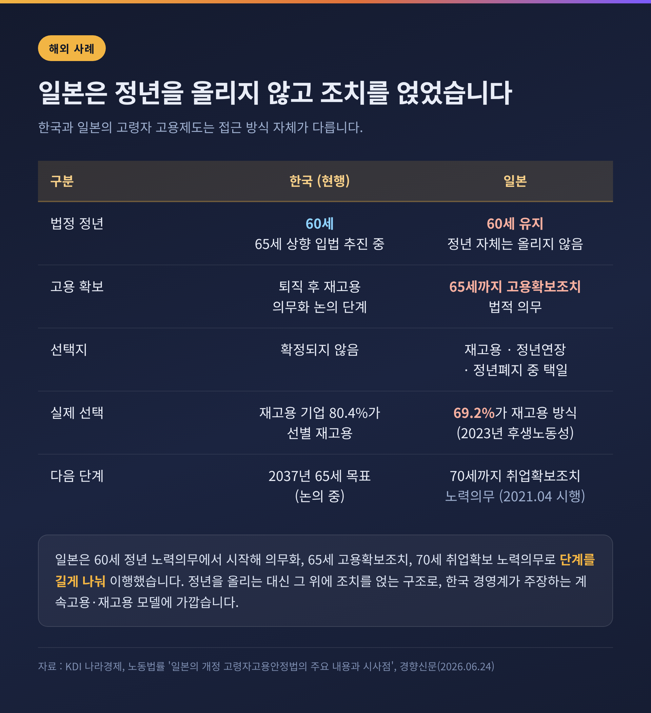

이번 글에서는 법정 정년 65세 연장 입법이 지금 어디까지 와 있는지를 정리해 보겠습니다. 상반기 목표는 이미 지났고, 공은 하반기 정기국회로 넘어갔습니다. 숫자와 쟁점을 차례로 짚어보겠습니다.
한눈에 보는 세 줄
더불어민주당 정년연장특별위원회는 올해 상반기 안에 정년연장 법안을 확정하겠다고 했습니다. 그 목표는 지켜지지 않았습니다.
특위는 2026년 4월 30일 민주노총 현장 노동자, 그리고 대·중소기업과 현장 간담회를 연 뒤로 후속 회의 일정을 잡지 않았습니다. 연초 특위에서 한국노총과 민주노총이 상반기 입법을 강하게 요구했지만, 상반기가 끝난 시점까지 구체적인 법안은 나오지 않았습니다.
법무법인 세종은 지난 6월 25일 뉴스레터에서 "정부와 국회가 늦어도 올해 하반기 정기국회에서 입법안을 통과시킬 계획을 밝혔다"고 정리했습니다. 8월 들어 흐름은 다시 국회로 옮겨갔습니다. 뉴스1은 8월 11일 보도에서 정년 연장의 연령과 속도가 아직 미정이며, 노사 협의와 국회 논의가 변수라고 전했습니다. 정부는 공공기관의 정원과 총인건비 제도를 손질해 청년채용 촉진을 병행하겠다는 방침입니다.
같은 달 20일에는 경제사회노동위원회가 '인구구조 변화와 일자리 공론화 특별위원회' 제2차 전체회의를 열었습니다. 시민 300명이 참여하는 숙의 절차가 본격적으로 시작된 것입니다.
핵심은 소득 공백입니다.
법정 정년은 2013년 입법 이후 60세에 묶여 있습니다. 반면 국민연금 수급개시연령은 계속 뒤로 밀렸습니다. 현재는 63세이고, 2033년 이후에는 65세가 됩니다.
출생연도별로 보면 이렇습니다. 1961~64년생은 63세, 1965~68년생은 64세, 1969년생부터는 65세에 연금을 받기 시작합니다. 1969년생이 60세에 퇴직한다면 연금이 나올 때까지 5년을 버텨야 합니다. 흔히 '소득 크레바스'라 부르는 구간입니다.
정흥준 서울과학기술대 경영학과 교수는 1968~1974년생의 소득 공백을 최소화하는 방향으로 속도를 내야 한다고 지적했습니다. 그가 제안한 안 중 하나는 2028년부터 매년 1년씩 정년을 올리는 방식입니다. 이 경우 2032년에 60세가 되는 1972년생부터는 소득 공백이 사라집니다.

정년특위가 가닥을 잡은 기본 골격은 단계적 상향입니다.
2028년 또는 2029년에 정년을 61세로 올리는 것으로 시작해, 2년마다 1세씩 높여 2037년 65세에 도달하는 방식입니다. 시행 시점에 따라 2028년에 60세가 되는 1968년생, 또는 2029년에 60세가 되는 1969년생이 첫 적용 대상이 됩니다.
특위가 검토한 것으로 알려진 안은 세 가지입니다. 2028년부터 2년마다 1년씩 올려 2036년에 완성하는 안, 2029년부터 2~3년 주기로 올려 2039년에 완성하는 안, 2029년부터 3년마다 1년씩 올려 2041년에 완성하는 안입니다. 마지막 안대로라면 65세 정년이 자리 잡는 데 15년이 걸립니다.
법안에는 퇴직 후 재고용 의무화도 함께 담길 전망입니다. 법정 정년을 1세 올릴 때마다 재고용 대상 연령도 1세씩 올려, 정년보다 한 살 높은 나이까지 계속 고용하도록 하는 구조입니다. 희망자 전원 재고용을 원칙으로 하되 건강상 이유 등 직무 수행에 심각한 문제가 있는 경우를 제외 사유로 규정하겠다는 방향입니다.
기업 부담을 덜기 위한 장치도 검토되고 있습니다. 임금체계 개편에 한해 취업규칙 불이익 변경 절차를 한시적으로 완화하는 안입니다. 뒤에서 보겠지만, 바로 이 대목이 노사가 가장 세게 부딪히는 지점입니다.
한 가지 덧붙이면, 기업 규모별로 시차를 두는 방식이 거론되기는 하지만 확정된 것은 없습니다. 2013년 60세 정년 의무화 때 300인 이상 사업장은 2016년, 나머지는 2017년으로 나눴던 선례가 있어 이번에도 비슷한 방식이 유력하다는 관측이 나오는 정도입니다.

두 진영의 요구는 겉보기보다 훨씬 멀리 떨어져 있습니다.
노동계는 모든 노동자의 정년을 일률적으로 올려야 한다고 봅니다. 김동명 한국노총 위원장과 양경수 민주노총 위원장은 지난 6월 16일 국회 소통관에서 공동 기자회견을 열고 65세 법정 정년연장 입법을 촉구했습니다. 재고용 방식에 대해서는 '값싼 노인 노동'을 양산할 수 있다며 반대합니다. 정년으로 근로관계를 한 번 끊었다가 다시 고용하면 고용 안정성이 떨어지고, 임금을 깎는 수단으로 쓰일 수 있다는 논리입니다. 노동계는 정년연장을 요구하면서도 임금체계 개편을 전제 조건으로 다는 것에는 반대합니다.
경영계는 정반대입니다. 한국경영자총협회는 직무·성과 중심으로 임금체계를 바꾸는 것을 전제로 한 퇴직 후 재고용이 현실적이라고 주장합니다. 류기정 경총 총괄전무는 일률적인 법정 정년연장이 노동시장 이중구조를 심화시키고 청년 신규채용을 줄여 세대 갈등을 키울 것이라고 밝혔습니다. 손경식 경총 회장도 정년 연장보다 재고용이 바람직하다는 입장을 내놨습니다.
경총이 6월 24일 발표한 조사는 경영계 논리의 근거로 쓰입니다. 30인 이상 기업 500곳을 대상으로 한 이 조사에서, 정년 후 재고용 제도를 도입한 기업의 80.4%는 희망자 전원이 아니라 선별적으로 재고용하고 있었습니다. 선정 기준 1위는 '업무 능력 및 성과'로 59.5%였습니다. 재고용 근로자의 임금은 퇴직 전과 같다는 응답이 59%, 줄었다는 응답이 34.2%였고, 감액 기업의 평균 감액률은 20.6%였습니다. 흥미롭게도 노조가 있는 기업의 감액률(26.2%)이 없는 기업(17.7%)보다 높았습니다.
같은 조사에서 정년이 일률적으로 연장되면 추가 대응이 불가피하다고 답한 기업이 52.4%였습니다. 대응 방식으로는 임금체계 개편이 34.2%로 가장 많았고, 신규 채용 축소와 재고용 제도 축소·폐지가 각각 25.2%였습니다.
여론은 또 다른 그림을 보여줍니다. 한국노총이 마크로밀엠브레인에 의뢰해 6월 7일 발표한 인식조사에서 만 65세 단계적 연장에 찬성한다는 응답은 88.3%였습니다. 40대 90.6%, 50대 89.3%로 중장년층에서 특히 높았습니다. 방식으로는 법 개정을 통한 단계적 정년연장이 46.3%로, 경영계가 선호하는 선택적 계속고용(37.1%)을 앞섰습니다.
다만 20~30대의 반응은 결이 달랐습니다. 청년 일자리 잠식 우려가 큰 만큼 청년 고용대책이 먼저 마련돼야 한다는 응답이 36.0%로 상대적으로 높게 나왔습니다.

비용 추정치부터 보겠습니다.
한국경제인협회는 정년을 65세로 조정할 경우 도입 5년 차에 60~64세 근로자 약 59만 명에 대해 임금과 4대 보험료 등으로 연간 30조2,000억 원이 추가로 든다고 추산했습니다. 도입 1년 차에는 추가 고용 규모가 약 5만8,000명, 비용은 3조1,000억 원 수준입니다. 한경협은 30조2,000억 원이면 25~29세 월평균 임금 279만1,000원 기준으로 청년 약 90만2,000명을 고용할 수 있다고 덧붙였습니다.
물론 이 숫자는 경영계 측 연구 결과입니다. 임금체계 개편이나 생산성 변화를 어떻게 가정하느냐에 따라 결과가 크게 달라질 수 있고, 노동계는 이 추산을 인정하지 않습니다. 그럼에도 숫자가 논의의 프레임을 잡는 힘은 무시하기 어렵습니다.
고용 통계는 더 직접적입니다. 국가데이터처가 8월 12일 발표한 7월 고용동향을 보면, 15세 이상 취업자는 2,913만6,000명으로 1년 전보다 10만8,000명 늘었습니다. 그런데 연령대별로 뜯어보면 60세 이상에서 23만1,000명이 늘었고, 20대에서는 20만4,000명이 줄었습니다.
15~29세 청년 취업자는 19만1,000명 감소해 45개월 연속 감소를 기록했습니다. 청년 고용률은 44.2%로 1.6%포인트 떨어져 27개월 연속 내림세이고, 청년 실업률은 6.8%로 1.3%포인트 올랐습니다. 2021년 1월 이후 가장 큰 상승 폭입니다.
고용보험 쪽도 방향이 같습니다. 2026년 6월 고용보험 상시가입자는 1,585만5,000명으로 26만4,000명 늘었는데, 이 중 60세 이상이 20만6,000명이었습니다. 증가분의 대부분이 고령층이었던 셈입니다.
예전엔 정년연장이 먼 미래의 제도 설계 문제로 읽혔습니다. 지금은 매달 발표되는 고용 지표가 세대 간 대비를 그대로 보여주고 있습니다.

가장 예민한 질문입니다. 경사노위의 진단은 생각보다 조심스럽습니다.
경사노위는 8월 20일 공론화 특위 회의에서 인구구조 변화에 따른 일자리 문제를 '일자리 충돌'과 '일자리 단절' 두 축으로 나눴습니다. 첫 번째 의제인 일자리 충돌에 대한 정리는 이렇습니다.
세대 간 직접적인 일자리 대체 효과는 제한적일 수 있다. 다만 고령자의 재직기간이 길어지면 기업의 인건비와 인력운용 부담이 커져, 신규채용 축소나 경력직 선호 강화로 이어지는 간접적인 경합 가능성은 있다.
특히 대기업과 공공부문처럼 상대적으로 양질의 일자리에서, 임금이나 직무 조정 없이 정년만 늘릴 경우 청년 고용에 영향을 줄 가능성이 제기됩니다. 연공형 임금체계가 그대로 유지된다면 부담은 더 커집니다.
반대 방향의 지적도 함께 나왔습니다. 청년 취업난을 고령자의 장기근속만으로 설명하기는 어렵다는 것입니다. 직무역량 미스매치, 기업의 경력직 선호, 인공지능 확산에 따른 일부 신입 수요 감소, 경제성장 둔화 같은 구조적 요인이 함께 작용합니다. 구조적 문제를 청년 대 고령자의 대결로 단순화하면 세대 갈등만 커질 수 있다는 경고입니다.
두 번째 의제인 일자리 단절은 한 사람의 노동생애 전체를 봅니다. 청년의 첫 일자리 진입, 여성의 출산·육아기 경력단절, 중장년의 조기퇴직과 하향 재취업이 모두 여기에 들어갑니다. 진입과 유지, 이동과 재진입의 연결이 끊기면 개인의 경력 손실이 쌓이고, 결국 사회 전체의 인적자본 손실로 이어진다는 문제의식입니다.
공론화 절차도 구체적입니다. 온라인 사전 인식조사에는 878명이 참여했고, 고령자와 청년이 상생하는 고용체계 관련 15개 문항 중 13개에서 찬성률이 77%를 넘었습니다. 큰 방향에는 공감대가 있다는 뜻입니다.
반면 각론에서는 갈렸습니다. 고령자가 근로시간을 줄이더라도 임금 수준을 최대한 유지해야 한다는 데는 59.6%가 찬성했고, '쉬었음' 청년 문제에서 정부 지원 확대보다 개인의 구직 노력이 더 중요하다는 데는 67.5%가 동의했습니다. 총론과 각론의 온도 차가 뚜렷합니다.
숙의토론회는 8월 30일 서울 연세대, 9월 5일 충남 천안 한국기술교육대에서 열립니다. 수도권과 비수도권 시민 각 150명씩 300명이 참여하고, 10월 집중 숙의로 이어집니다.
정년을 몇 세로 할지보다, 그 나이까지 임금을 어떻게 줄지가 더 어려운 문제입니다.
한국 기업 상당수는 여전히 연공급, 즉 호봉제를 유지하고 있습니다. 근속이 길어질수록 임금이 자동으로 올라가는 구조입니다. 이 상태에서 정년만 5년 늘리면 고령 근로자의 인건비가 그대로 5년 더 쌓입니다. 경총이 임금체계 개편을 전제로 내세우는 이유입니다.
실무적으로는 두 가지가 걸립니다. 하나는 임금피크제입니다. 도입하거나 바꿀 때 고령자고용법상 연령차별에 해당하지 않도록 합리적으로 설계해야 합니다. 다른 하나는 절차입니다. 특례가 없는 한 취업규칙 불이익 변경 절차를 거쳐야 하고, 이는 노동자 과반의 동의를 요구합니다.
정년특위가 이 절차를 한시적으로 완화하는 안을 검토한 배경이 여기에 있습니다. 그리고 노동계가 반발하는 지점도 정확히 여기입니다. 임금과 노동조건의 변경은 노사 합의를 거쳐야 하며, 기업이 일방적으로 취업규칙을 바꿔서는 안 된다는 것이 노동계의 원칙입니다.
정년연장은 결국 임금 문제입니다. 이 매듭을 풀지 못하면 나머지 논의는 겉돌 수밖에 없습니다.
비교 대상으로 자주 거론되는 나라가 일본입니다. 다만 그 경로를 정확히 볼 필요가 있습니다.
일본은 60세 정년 노력의무에서 시작해 60세 정년 의무화, 65세까지 고용확보조치 노력의무와 의무화, 그리고 70세까지 취업확보조치 노력의무로 단계를 밟아 왔습니다. 시간을 길게 쓴 것이 특징입니다.
2000년에는 기업에 65세까지 고령자 고용 확보 조치를 하도록 하면서, 재고용과 정년연장, 정년폐지 중 하나를 고를 수 있게 했습니다. 실제로 가장 많이 선택된 것은 재고용이었습니다. 2023년 후생노동성 조사에서 전체의 69.2%가 재고용 방식을 택했습니다.
2021년 4월부터는 개정 고령자고용안정법이 시행돼 70세까지 취업 기회를 확보하도록 노력해야 합니다. 다만 이것은 노력의무이지, 모든 일본 기업에 부과된 법적 의무는 아닙니다.
주목할 점은 일본이 법정 정년 자체는 60세로 유지했다는 사실입니다. 정년을 올리는 대신 그 위에 고용확보조치를 얹는 구조를 택한 것입니다. 한국 경영계가 주장하는 계속고용·재고용 모델과 가까운 형태입니다. 노동계가 일본 사례 인용에 경계심을 보이는 이유이기도 합니다.

2026년 8월 25일 현재, 확정된 것은 없습니다. 법안도, 시행 시점도, 기업 규모별 적용 일정도 모두 미정입니다.
일정만 놓고 보면 두 갈래입니다. 하나는 하반기 정기국회에서 법안이 처리되는 경로입니다. 경사노위 숙의 결과가 10월에 정리되면 이를 반영한 절충안이 나올 여지가 있습니다. 다른 하나는 다시 해를 넘기는 경로입니다.
시간 압박은 실재합니다. 한성규 민주노총 부위원장은 올해 안에 입법이 이뤄지지 않으면 현 정부 임기 내 처리가 어려울 수 있다고 말했습니다. 정흥준 교수는 2028년 총선 이전까지 계속 미루기는 어렵다는 점을 짚었습니다.
절충의 윤곽은 어렴풋이 보입니다. 법정 정년은 단계적으로 올리되 속도를 늦추고, 재고용 의무를 함께 두며, 임금체계 개편에 관한 절차 특례를 한시적으로 허용하는 조합입니다. 여기에 청년 고용 대책을 묶는 그림입니다. 실제로 한국노총 조사에서도 정부와 국회가 우선 추진해야 할 과제로 기업 재정 지원·세제 혜택 확대(50.6%), 신속한 법률 개정(48.9%), 청년 구직자 지원 및 의무채용 비율 확대(43.4%)가 나란히 꼽혔습니다.
다만 이 조합은 노사 어느 쪽도 만족시키기 어렵습니다. 노동계는 속도가 느리다고 볼 것이고, 경영계는 부담이 크다고 볼 것입니다. 합의가 쉽게 나오리라고 기대하기는 어렵습니다.
정리하면 이렇습니다.
정년 65세 연장은 이미 방향의 문제가 아니라 속도와 조건의 문제로 넘어왔습니다. 국민 88.3%가 찬성하고, 연금 개시 연령은 이미 뒤로 밀려 있습니다. 남은 것은 5년의 소득 공백을 누가, 어떤 비용으로 메울 것인가입니다.
"정년을 늘리는 일은 나이를 고치는 일이 아니라 임금을 다시 설계하는 일입니다."
이 문장이 받아들여지는 순간, 논의는 비로소 앞으로 나아갈 것입니다. 그때까지는 매달 나오는 고용 통계가 대신 말을 할 것입니다. 60세 이상은 늘고 청년은 줄어드는 그 숫자가, 사실은 가장 조용한 압박입니다.